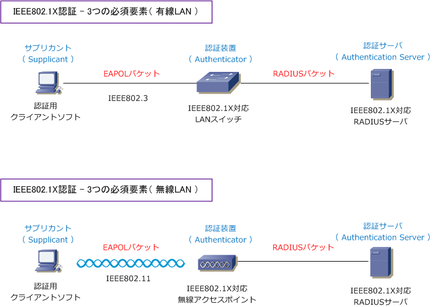
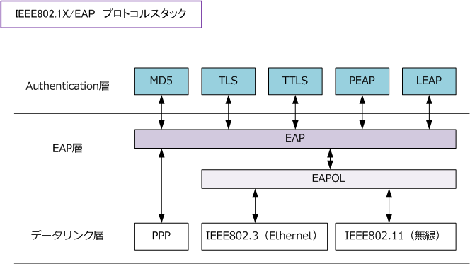
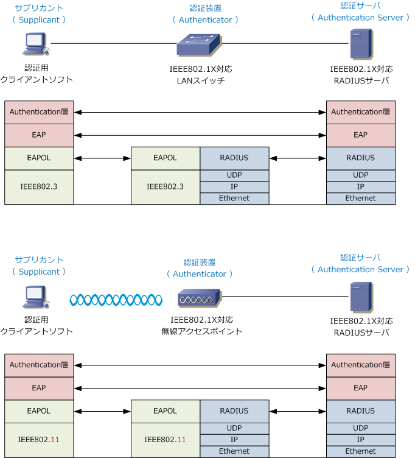

IEEE802.1X
IEEE802.1Xとは
IEEE802.1Xとは、有線LANや無線LANにおけるユーザ認証の規格です。当初は有線LANでクライアントPC をネットワーク接続する際にユーザ認証を行う目的で策定された規格なのですが、無線LANの初期においては WEPによるセキュリティしかなかったため、WEPにはないユーザ認証などの仕組みが無線LAN環境において セキュリティ的に最適であったことから有線LANよりも無線LAN環境で先に普及しました。今回は無線LANの 技術解説でIEEE802.1Xの技術解説を行いますが、以下の技術解説は有線LANにおいても適用できる内容です。
IEEE802.1Xの構成要素
IEEE802.1X認証を行うためにはサプリカント、認証装置、認証サーバの3つの構成要素が必要となります。
| 3つの構成要素 | 説明 |
|---|---|
| サプリカント （Supplicant) |
IEEE802.1Xにおけるクライアントのこと。またはクライアントにインストールするソフトウェア。 認証を受けるクライアントはPCにインストールする必要があるが、最近のPCには標準搭載されている。 |
| 認証装置 (Authenticator) |
サプリカントと認証サーバの仲介役となるネットワーク機器。IEEE802.1X対応のLANスイッチまたは 無線LANアクセスポイントのこと。これらの機器はサプリカントと認証サーバとの認証結果を受けて、 ネットワークへのアクセス制御を行う。Ciscoは有線/無線LANスイッチともにIEEE802.1Xに標準対応。 |
| 認証サーバ (Authentication Server) |
ユーザ認証を行うサーバのこと。IEEE802.1X/EAPに対応したRadiusサーバを使用する。 |
これら3つの構成要素以外に、クライアント認証の際に「証明書」を使用する場合、証明書を発行するための CA（認証局）が必要。

※ EAP-TLSでは、SSL3.0（Secure Sockets Layer3.0）を基に標準化したTLS1.0を、EAPのパケットフォーマットで実行します。
EAPとは
802.1X認証では、様々な認証が行えるようにEAP（PPP Extensible Authentication Protocol）プロトコルを サポートしています。EAPはPPP（Point-to-Point Protocol）を拡張したプロトコルであり、データリンク層 プロトコルと認証プロトコルの仲介役となります。下図はIEEE802.1X/EAPにおけるプロトコルスタックです。
利用する認証方式で使用するAuthentication層のプロトコル（MD5, TLS, TTLS, PEAP, LEAP) が異なります。 これらのAuthentication層プロトコルはサーバとクライアントとで一致しなければ通信できません。

| 各層 | 説明 |
|---|---|
| データリンク層 | 802.1X認証を行うための物理的なネットワーク。有線LAN接続、無線LAN接続のどちらでも利用できる。 |
| EAP層 | EAPがデータリンク層とAuthentication層の仲介をしています。EAPOL (EAP over LAN) は、有線LANや 無線LANにてEAPを使えるようにするプロトコルであり、データリンク層のメディアの違いを吸収している。 |
| Authentication層 | 802.1X/EAPでサポートする認証方式。有線LANと無線LANではEAP層が仲介するので、どの認証方式でも 利用することができる。現在のところ、TLS、MD5、TTLS、PEAP、LEAP、EAP-FASTなどがある。 |
上図のIEEE802.1X/EAPプロトコルスタックには IP がありません。どうやって認証サーバと通信するのか、 それはサプリカントから受信したEAPメッセージを認証装置がIPパケットに変換し認証サーバに送信します。

※ EAPの認証方式（MD5、LEAP、EAP-FAST、TLS、TTLS、PEAP）の違いを詳しく学習したい方は 802.1X/EAP その2 をご参考。